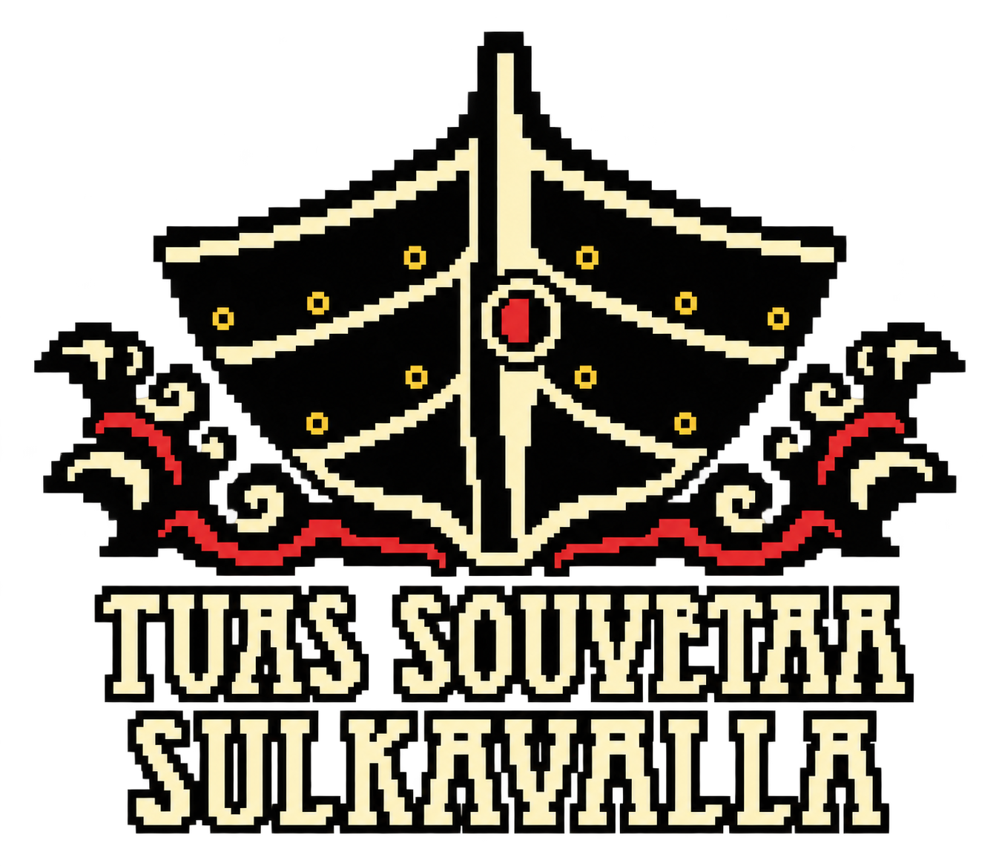
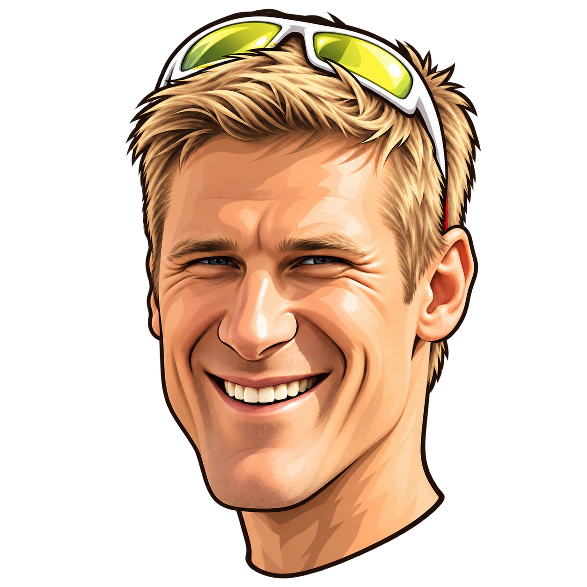

SULKAVAN SUURSOUTU / YKSINSOUTU
Sulkavan Suursoutu
Nopeus0,0km/h
Vetotahti0vetoa/min
Matka0,0km / km
Rytmi—aloita soutu
Nestetasapaino100 %
Tasapainossa
Energiatasapaino100 %
Varastot täynnä
Tuoreus100 %
Tuore soutaja · W′ 100 %
Käsien rakot0 %
Kädet kunnossa
Krampit0 %
Ei kramppeja
Aika00:00:00Ennuste —

Valitse pelitapa
Jatka aiempaa soutua tai aloita uusi.
Tekijä: Panu Musakka
Yksinsoutajat lähtevät 10 minuuttia vuorosoutajien jälkeen.
VAIHE 1 / 3
Valitse soutaja

Valitse soutuun mukaan otettavat eväät.
Lähtö Hakovirran sillalta. Paina karttaa tai välilyönti pohjaan kiinniotossa.
Vedä vihreälle alueelle, vapauta ja anna veneen liukua takaisin kiinniottoon.
Soutu tallentuu automaattisesti tähän selaimeen.
TYYNI REITTIOSUUSTuuli ↙ 1,8 m/s
EVÄÄT VENEESSÄ
Tankkaa ennen kuin mittarit romahtavat.
Et ole vielä nauttinut mitään.
Pelimalli arvioi hikoilua, hiilihydraattien imeytymistä, natriumin menetystä ja rasituksen kertymistä. Se on pelillinen simulaatio, ei yksilöllinen ravitsemusohje.